今晚的三条线都指向同一个方向：人工智能正从"能用"走向"能被托付"。机器人第一次在没有预先采集过数据的陌生家庭里完成任务；大模型第一次参与到自身下一代系统的优化里；而月球表面新增的那个陨坑提醒我们，人类的活动半径正在变宽，配套规则却还没有跟上。今天科研版面上也出现两个"第一次"：科学家把一整只脊椎动物所有器官的细胞活动拍进了同一段影像，也看清了细胞膜上那台"总闸门"酶的工作流程。
把今天的二十条新闻摆在一起，最清楚的信号是：衡量人工智能的尺子正在被换掉。
先看具身智能。Figure 让机器人在旧金山湾区30栋陌生房屋里完成整理任务，成功率从前代的8%跳到56%；清华系的光象科技把世界模型装进车厂产线，讲的是部署效率十倍。两条消息来自不同场景，指向却是同一件事——评价标准从"演示得像不像"换成了"结果能不能算清"。过去一年，具身智能的重心从"进家庭"转向"进厂"，因为工厂的节拍、良品率和停机时间都是硬指标。
再看模型自身。智谱在十万卡国产集群上让 GLM 参与自身推理系统的优化，不到两周把端到端吞吐提升到基线的3.2倍——同类成果过去通常由工程团队花数月完成。同一个方向上，中国电信把全链路国产化的29B模型开源，阿里把音视频接口价格砍掉九成以上。能力提升的路径里因此多了一个叫"闭环质量"的变量。
第三条线在观测能力上。全身活体成像系统第一次把完整脊椎动物所有器官的细胞活动记录进同一段影像，上海药物所的团队看清了 UGCG 这台"总闸门"酶的结构——工具的边界在哪里，认识的边界就在哪里。而月球上那个新陨坑，是火箭漂流一年半后的终点；被遗弃的硬件只会越来越多，这一带却还没有通行的处置规则。
01
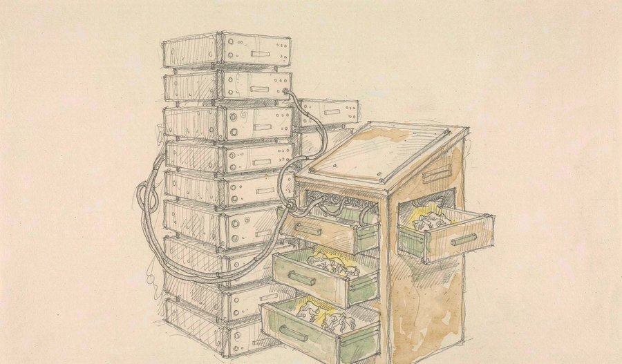
9月18日，华为全联接大会2026在上海继续举行。华为云发布面向生产环境的企业智能体基础设施 Agentic Infra，围绕 Token 处理、记忆存储、通智一体调度与安全自治搭建体系；配套的灵衢昇腾950智算集群全球上线，可在10分钟内完成故障恢复，Token 吞吐较上一代提升20%，9月30日国内商用。会上同时发布企业级智能体平台智果 AgentArts 与开源版本 openJiuwen，目前已服务超过3500家客户。
把"记忆"单独列成一项基础设施，是这次发布里最值得记的一笔——智能体做长任务时最大的敌人不是算力不够，而是忘事。
观此：当长程记忆与快速自愈变成标准服务，企业采用智能体的门槛就从"能不能跑通"降到了"愿不愿意试"。竞争焦点也在上移——能让模型稳定跑起来的整套系统，比单颗芯片的参数更重要。
02
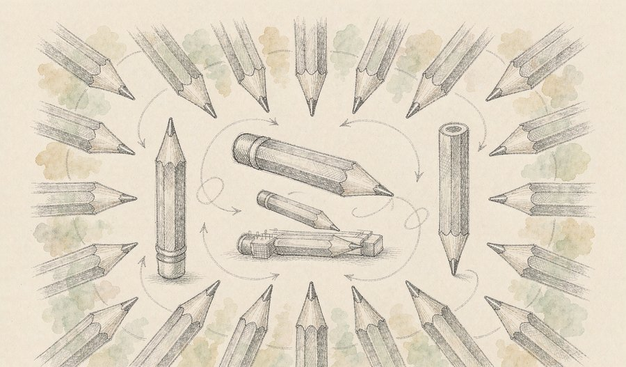
9月18日，智谱公开其在递归自我改进方向的成果：在超过十万张国产芯片组成的集群上，GLM 参与到下一代基座模型的迭代中，通过轻量模型辅助数据生成与模型调优，形成"模型训练模型"的闭环。据披露，由其驱动的 Infra Agent 参与搭建并优化了一套生产级推理系统，不到两周把端到端吞吐提升到初始基线的3.2倍。
与"调用更多算力"相比，"让模型自己找优化点"是性质不同的提速方式——前者拼资源，后者拼闭环质量。
观此：这标志着国内大模型进入递归自进化的前沿探索阶段，但行业也同步给出警示：这类技术会放大模型对齐风险，能力越强，配套的安全校验就必须越严。
来源：智谱公开信息与行业披露
03
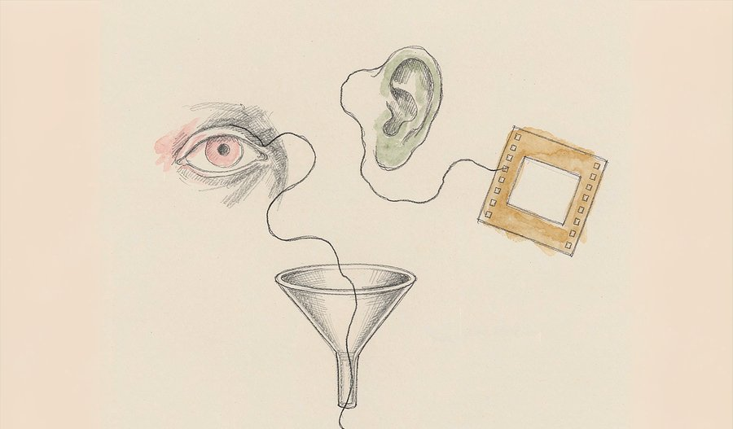
阿里千问上线新一代原生全模态模型 Qwen3.8-Omni-Flash，支持文本、图像、音频、视频输入，上下文长度达100万 token，面向企业开发者开放 API。官方数据显示，其30项评测得分相较上一代平均提升26%，音频输入价格降幅超过98%。模型可完成视频剪辑、影视解说与实时语音交互，并开源了配套的工具链。
这轮升级的分界线不在于"能读懂音视频"，而在于把音视频当成可编排的工作流。价格降幅比分数更值得注意——当一段长音频的处理成本降到此前的几十分之一，许多因成本被放弃的场景会重新变得可行。
观此：音视频智能体一直是国产模型的相对短板，工具链开源则把门槛从模型能力转移到了产品设计。谁能先想清楚"委托给模型之后人做什么"，谁就先拿到这部分需求。
来源：阿里云千问公开信息
04
字节跳动发布豆包手机二代，售价5999元。核心变化是采用 SAEP（智能体生态协议），把"应用之间能互相调用"做成系统级能力，任何应用都可以被智能体当作工具调用，不再依赖用户逐个打开 App。该机型定位为端侧智能体的入口设备，是首款深度集成该协议的消费级硬件。
协议比硬件更值得记。过去智能体的动作范围被限制在少数能接入的服务里，一旦系统级协议把全机应用变成工具箱，它的边界就由生态适配速度决定，不再由模型能力决定。
观此：竞争问题于是变成"有多少开发者愿意为这套协议做适配"。字节选择先把终端占住，阿里面向 API、华为面向云端，三种路径背后是对入口位置的不同判断。
来源：AppSo/行业公开信息
05
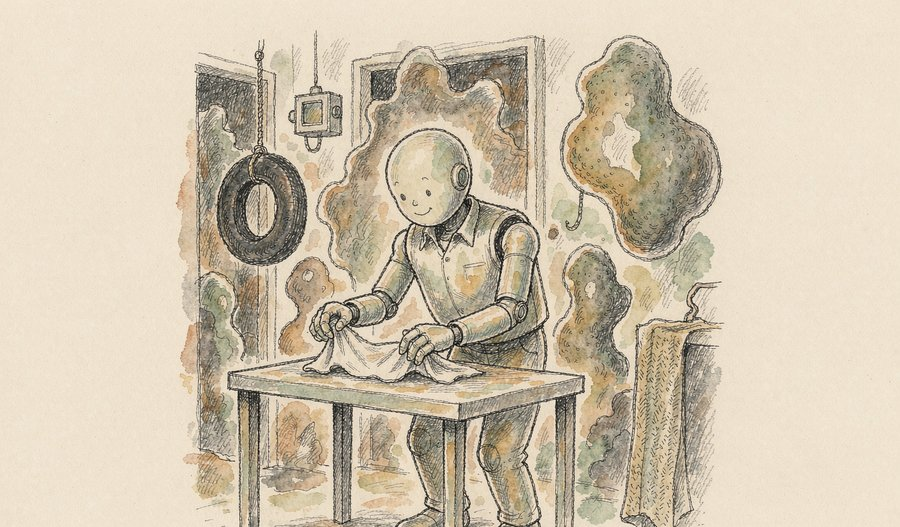
当地时间9月17日，人形机器人公司 Figure 发布神经网络模型 Helix 2.5。实验中，搭载该模型的机器人在旧金山湾区30栋此前从未采集过数据的陌生房屋中，完成了整理客厅、折毛巾、整理床铺三类长时序任务，无需任何额外训练或微调。任务成功率从前代的8%提升到56%，只用一半的任务专用数据就完成泛化，并表现出后退重新定位、改变站姿等自我纠错行为。
从8%到56%，变化的关键变量不是算法微调，而是把大规模人类行为数据用于预训练。这解释了具身智能的竞争为何正从"本体性能"转向"数据获取能力"。
观此：更值得留意的是自我纠错：机器人在陌生环境里不再一次性赌对，而是能发现自己错了并调整姿态重来。这是从演示走向实用的必要条件，也是"世界模型"这条路线今年被普遍认可的原因。
来源：科创板日报
06
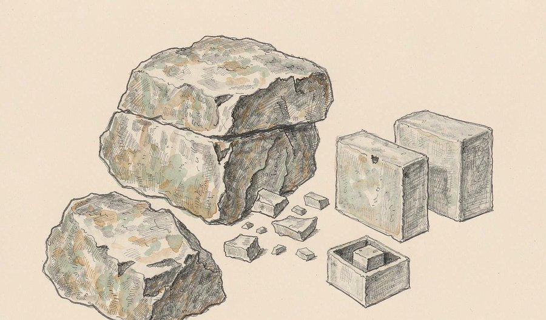
PrismML 发布 Ternary Bonsai 2 27B，基于通义千问27B构建，采用三值（-1、0、1）量化，实现约9倍内存压缩，同时保留较强的推理、编程、视觉与智能体能力。该模型延续其"极限压缩而非缩小参数规模"的路线，目标是在消费级设备上高效运行27B级多模态模型。
端侧模型的竞争指标正在从"能不能跑"变成"跑得省不省"。三值量化把每个权重的平均占用压到不到两个比特，代价是精度折损，收益是显存门槛骤降。
观此：现实意义在于：当27B级模型能装进普通显卡，数据不出本地就从一句口号变成一项可以默认开启的设置。压缩后的能力折损是否可接受，是它能否被广泛采用的关键检验。
07
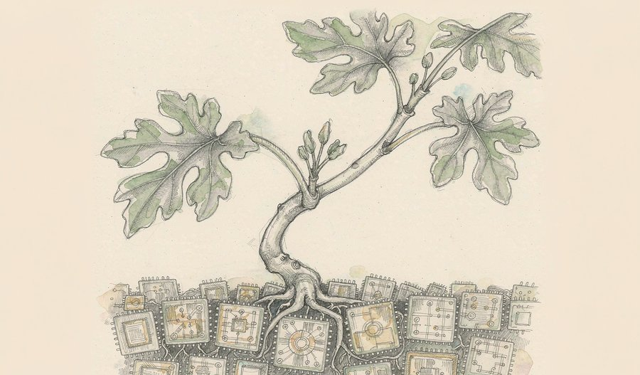
中国电信星辰实验室开源 Xing4.0-29B-A4B，基于国产算力与国产框架完成训练，采用 MoE 架构，总参数29B、每次激活约4B，原生支持256K上下文并可扩展至512K，主打编程与工具调用任务。官方跑分显示其与同量级开源模型水平接近；4-bit 量化后显存占用约15GB，可在单张24GB显卡上本地部署。
"纯血国产"的意义不只在跑分，而在于训练、推理到部署工具的整条链路都完成了本土适配——这决定了它能否被稳定复现，也决定了它能否进入对供应链有要求的场景。
观此：15GB 的量化显存占用是个务实的数字，正好落在大量开发者现有硬件的覆盖范围内。门槛降到这个位置，企业内部文档与报表类任务就具备了在本地完成的现实条件。
08
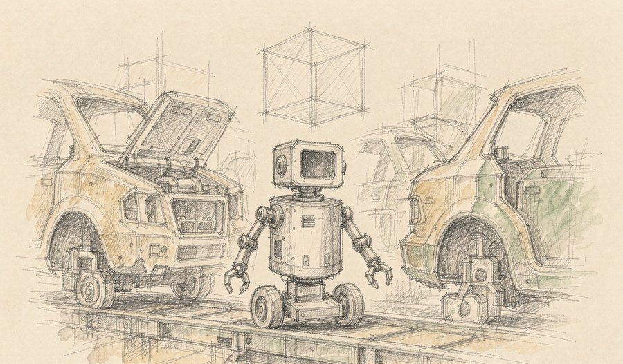
清华系公司光象科技联合清华大学李升波教授课题组发布物理原生世界模型 Phi-WM 1.0，其首款工业级具身智能机器人 Phi-bot X1 已在多家豪华品牌车厂的真实产线完成验证并进入部署阶段。公司称，相较传统工业自动化方案，部署效率提升10倍以上；移动质检任务中检测速度比现有生产节拍快20%以上，且无需预先铺设固定摄像头。
具身智能的叙事重心今年从"进家庭"整体转向"进厂"，原因是工厂的指标清晰——节拍、良品率、停机时间，都是可算账的。
观此：机器人开始靠自身感知替代环境改造，这直接决定了一条产线从签约到上工的周期长短。行业里反复被讨论的泡沫问题，最终也只能由这类可量化的部署数据来回答。
来源：钛媒体
09
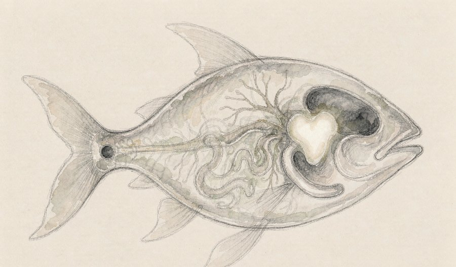
美国霍华德休斯医学研究所 Misha B. Ahrens 团队开发出全身活体成像系统 WHOLISTIC，能够在细胞分辨率下记录完整脊椎动物全身各器官的细胞活动，成果发表于《自然》。系统筛查发现了软骨细胞对寒冷的反应等此前未见的现象，并捕捉到由脑干调控的全身血流再分布；与光遗传学结合后，实现了对脑—体相互作用的因果剖析。
以往研究大多一次只盯一个器官，因为成像深度与视野难以兼顾，"全身联动"长期停留在推理层面。这套系统的价值是把多器官同时观测变成可执行的操作。
观此：于是肌肉之间、肌肉与器官之间的未知协作第一次能被直接看见。方法学的突破往往不产出轰动结论，却会在此后几年里不断出现在别人的论文里——它改变的是整个领域能问什么问题。
来源：中国科学报
10
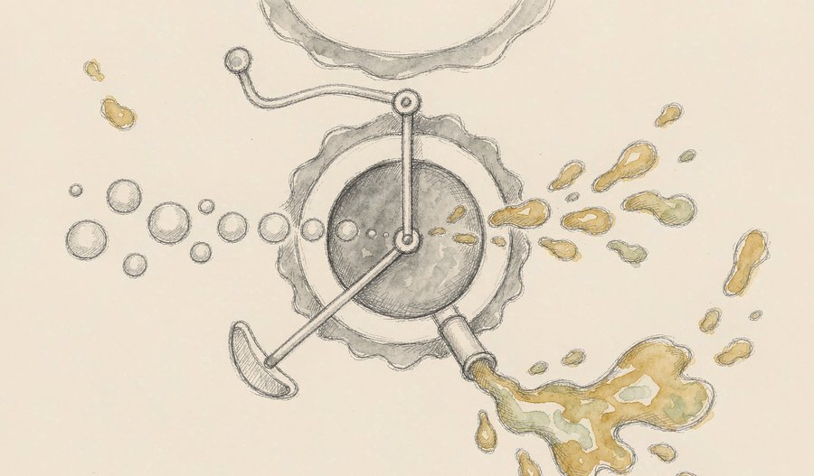
中国科学院上海药物研究所徐华强团队联合上海交通大学医学院附属瑞金医院、临港实验室等机构在《自然》发表论文，揭示了尿苷二磷酸葡萄糖神经酰胺葡萄糖基转移酶（UGCG）的整体架构、底物识别、催化反应及药物抑制机制。团队借助冷冻电镜捕捉到完整人源蛋白在8种工作状态下的高分辨率结构，还原了它的完整工作流程。
人体内400多种糖鞘脂大多经过同一个起点，UGCG 的活性稍有变化就会波及细胞膜组成与信号传导，因此它一直是药物研发关注的位置。
观此：棘手之处在于它个头小、深嵌在高尔基体膜里，且要在"水里"和"油里"各取一种原料，传统手段很难看清中间过程。看清结构意味着可以开始谈"如何精确干预"，而不只是描述它重要。
来源：医学科学报
11
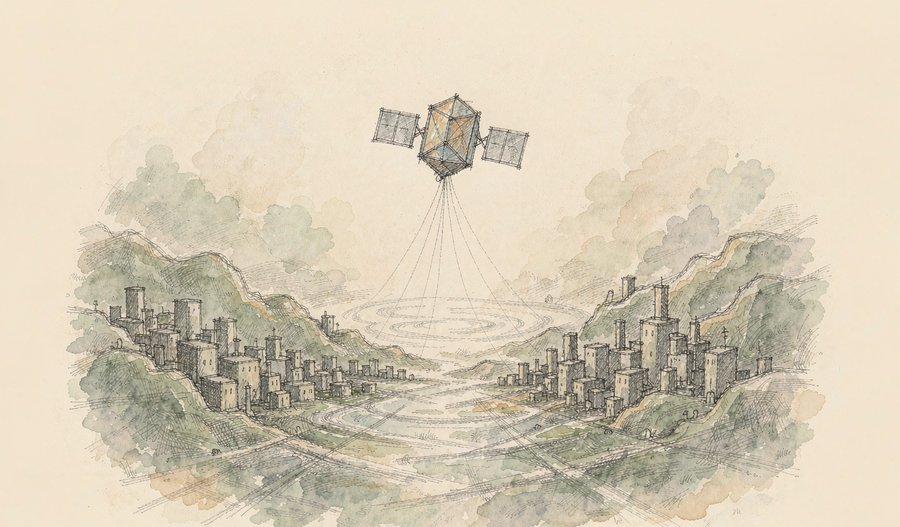
9月17日10时40分，我国在酒泉卫星发射中心使用快舟十一号遥三运载火箭，以"一箭双星"方式将天仪51星、天仪52星送入预定轨道。两颗卫星为全球首组成功入轨的商用中倾角 InSAR（干涉合成孔径雷达）遥感卫星，运行于55度中倾角倾斜回归轨道，搭载星上 AI 处理载荷与高速激光星地链路。
InSAR 擅长的是形变监测，这类能力对地面沉降、滑坡预警与基础设施健康监测都有直接用途。把轨道倾角选在中纬度，是把覆盖重点放在人口与工程密集的区域。
观此：星上 AI 处理改变了数据回传的逻辑——先在轨把影像处理成结论，只把有用的部分发回来。它对整个遥感链条的意义，可能比卫星本身更大。
来源：澎湃新闻
12
东方空间研制的引力一号遥三箭自海上发射平台点火升空，将9颗卫星送入预定轨道，其中8颗为千帆星座成员。本次任务刷新了中国海上发射的最大载荷重量与最高轨道高度两项纪录，总载荷超过3吨，轨道高度约800公里。这是该型火箭在56天内完成的第二次远海发射，被定义为全球首次低轨宽带互联网星座组网的海上机动发射。
海上发射的核心优势是可以机动到更接近赤道的位置，用同样的运力换取更高的入轨效率，同时把残骸落区从人口密集的陆地上挪开。
观此：56天内两次远海发射，说明限制瓶颈已不在单次发射的技术，而在流程与保障能否跟得上。对星座建设这种规模化工程来说，稳定节奏比单次亮点更能说明问题。
来源：搜狐/东方空间公开信息
13
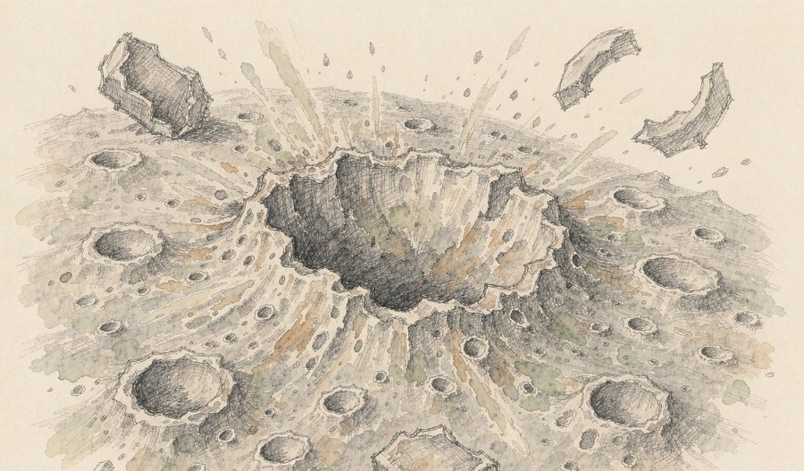
NASA 月球勘测轨道飞行器拍摄到月球爱因斯坦坑附近一处新形成的撞击坑，直径约18米、深不足3米，周围可见明暗相间的溅射条纹。该坑由一枚2025年1月发射、此后在环月空间漂流约一年半的猎鹰9号二级火箭残骸造成，撞击点位于月球正面。韩国探测器在撞击后数小时经过该区域，影像帮助校正了精确坐标。
这枚火箭已无法返回地球大气层，轨道在太阳活动与地月引力共同作用下逐渐失稳，最终撞击被提前算出——误差收敛到不足一公里。
观此：这类预测能力本身就是演练：如果目标是逼近地球的小天体，需要的正是同一套计算。更现实的问题是，被遗弃的硬件会越来越多，而这一带目前并没有通行的处置规则。
14
拜耳宣布美国食品药品监督管理局已批准非奈利酮（Kerendia）用于治疗伴有1型糖尿病的慢性肾脏病成人患者。这是三十多年来首个获批用于该适应症的药物，也是该药在美国获批的第三项适应症。在美国，约30%的1型糖尿病患者会发展为慢性肾脏病。
慢性肾脏病的难点在于早期几乎无症状，一旦进展到晚期，可选手段非常有限。一个已有适应症的药物拓展到新患者群体，价值不在于分子是新的，而在于这部分患者长期没有针对性的获批方案。
观此：糖尿病相关肾病的药物版图近年持续扩张，方向是把干预点前移——在肾功能还保留大半的时候介入，远比等到需要替代治疗时再想办法有效。
来源：医食参考/药财早报
15
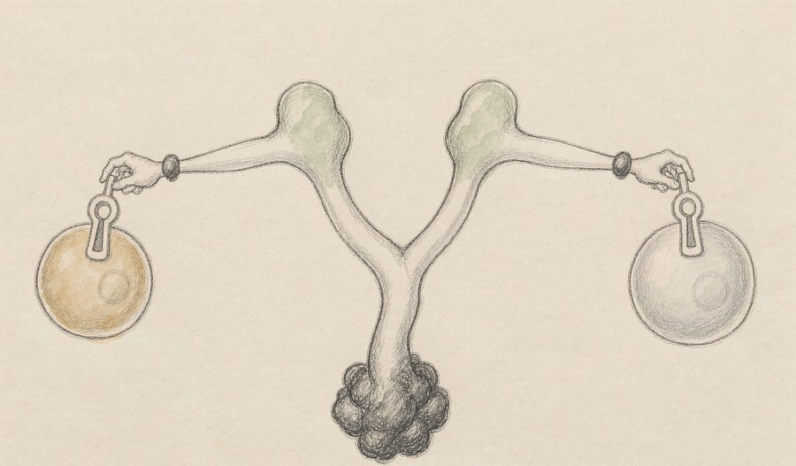
9月17日，第29届中国临床肿瘤学会学术年会在济南开幕。四川百利药业研发的伦康依隆妥单抗两项III期研究获得"2026创新研究奖"，分别针对复发或转移性食管鳞癌、不可切除局部晚期或转移性三阴性乳腺癌。该药是全球首个获批上市的双抗ADC药物。
双抗ADC的思路是同时锁定两个靶点，让药物更难被单一耐药机制绕开。真正值得关注的是两项研究针对的瘤种——食管鳞癌与三阴性乳腺癌长期缺乏有效选项，患者基数大而进展缓慢。
观此：一项主要临床研究在国内完成并走向国际认可的药物，意味着治疗选择的结构在变，而不只是数量在增加。截至今年6月，该药正在中美开展45余项临床研究。
来源：成都商报/红星新闻
16
罗氏宣布，莫妥珠单抗联合来那度胺用于二线治疗复发或难治性滤泡性淋巴瘤的III期临床研究达到主要终点。与对照方案相比，该联合方案显著改善了患者无进展生存期，并同时达到统计学意义与临床意义上的改善，总生存期数据尚未成熟。此前公布的数据显示，该联合方案客观缓解率为96.3%，完全缓解率为88.9%。
滤泡性淋巴瘤的特点是反复复发、难以根治，因此"把无进展生存期拉长"对患者而言是最实际的获益。把已获批的三线疗法前移到二线，是肿瘤药物开发中常见的路径。
观此：同一个分子，越早用往往效果越好，这是肿瘤治疗中反复被验证的经验。不过总生存期数据尚未成熟，说明最终结论仍待更长随访——缓解率漂亮不等于生存获益确证。
来源：医食参考/药财早报
17
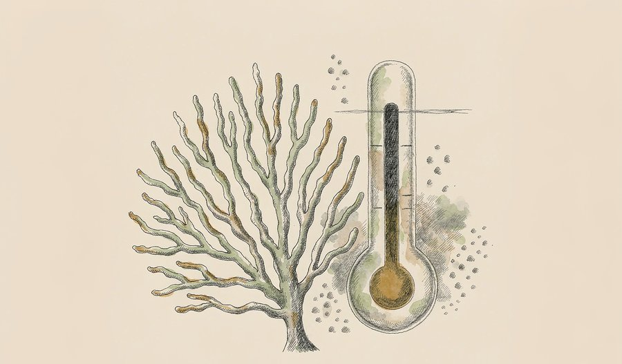
国际气候研究机构发布的评估报告确认，随着全球升温达到约1.4℃，热带珊瑚礁已经跨过其热临界点。珊瑚礁热临界点的中心估计值为1.2℃，当前全球气温已超过这一水平。相关研究同时指出，即使升温短暂超过1.5℃，也可能触发多达五个地球系统临界点。
临界点的含义是"越过之后，过程不再受控"——即便排放立刻停止、温度稳定在某个水平，已发生的退化也不会自行逆转。这与"污染了再治理"是两套完全不同的逻辑。
观此：全球有超过5亿人直接依赖珊瑚礁生态系统获取食物与收入，因此这里说的不是一个生态标签，而是一整条生计链条。把"不可逆"从推理写进评估结论，是这份报告的分量所在。
来源：气候评估综合报道
18
"众神吴哥——高棉帝国的千年瑰宝"展览9月17日在湖南省博物馆开展，汇集柬埔寨国家博物馆、吴哥保护库房以及云南省博物馆、上海博物馆、湖南省博物馆的150余件（套）珍藏。展览以吴哥文明的众神造像与石刻艺术为核心，展期持续至2027年3月21日。
9至15世纪的高棉帝国延续六百余年，吴哥古迹1992年列入世界遗产名录。石刻艺术刻画的是信仰体系，同时也是一套当时社会组织方式的记录——谁有能力调动如此规模的工匠与石料。
观此：这次展览在展厅角落安排了一些短句作为"低语"，试图让观众从观看者变成感受者。这类设计近年越来越多，反映出博物馆正在思考如何让人停留得更久，而不只是顺利走完动线。
来源：中国新闻网/环球网
19
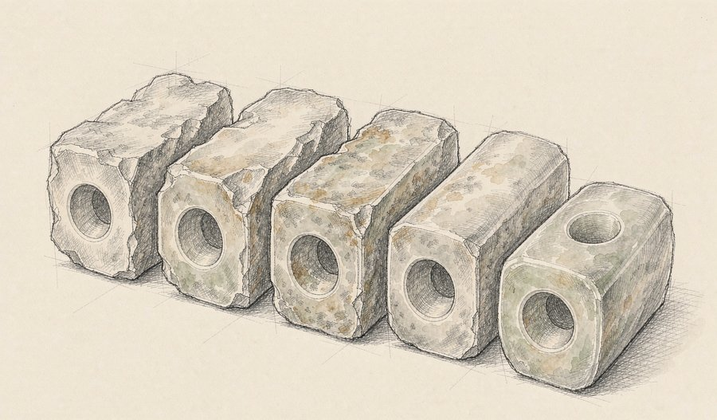
"琮谱——良渚遗址发现九十周年特展"近日在杭州良渚博物院开展，汇聚国内14个省份及海外39家收藏单位的124件琮及琮式器物。展览设置"起、合、承、转"4个单元，梳理玉琮从史前神权礼器到历代礼制符号、东方审美载体的演变过程，甘肃省临夏州彩陶馆的4件馆藏玉器参展。
把同一类器物在九十年间散落于各地与海外的实例集中起来，本身就是一次学术整理——单看一件是工艺品，排成序列才能看出形制如何随信仰与制度迁移。
观此：良渚遗址发现至今九十年，这次展览像是给它做了一次阶段性的谱系清点。跨省跨国聚合展品也说明，博物馆之间的资源协作正在成为常态。
来源：人民网甘肃频道
20
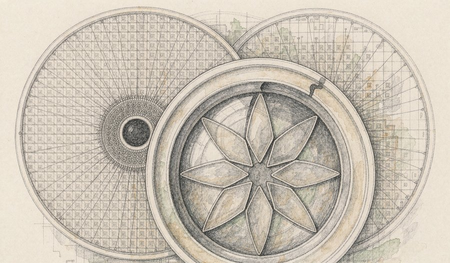
9月18日，苹果 iPhone 18 Pro 与 iPhone 18 Pro Max 正式开售，国行9999元起。该系列搭载 A20 Pro 芯片，采用台积电2纳米工艺，新增可变光圈主摄，续航与充电规格升级，256GB 存储起步。
"开售"这个动作的分量在于，2纳米工艺第一次从发布走向了可被消费者买到的商品。先进制程过去几年常以发布会的形式出现，而真正决定它影响面的是能覆盖多少台设备。
观此：可变光圈的意义也类似——把专业相机上的机械结构下放到手机，说明影像的竞争焦点正从像素与算法回到光学本身。当硬件规格开始趋同，光学与结构设计会成为新的分水岭。
来源：IT之家
今晚的二十条新闻可以归到三条线上。第一条是具身智能开始交作业：机器人在30个陌生家庭把成功率从8%做到56%，工业机器人把部署效率算成了十倍——衡量标准从"能不能做出来"换成了"能不能算清账"。第二条是大模型开始参与自己的迭代：智谱用十万卡集群让模型参与优化自身推理系统，中国电信把全链路国产化的29B模型开源，能力提升的路径里多了一个叫"闭环质量"的变量。第三条是观测能力继续外扩：全身活体成像把整只动物的器官活动拍进同一段影像，细胞膜上的"总闸门"被看清，而月球上那个新陨坑提示，活动半径变宽之后，配套的规则还没有跟上。
内容仅供资讯参考。
本文插画由 AI 辅助绘制。
本文插画由 AI 辅助绘制。